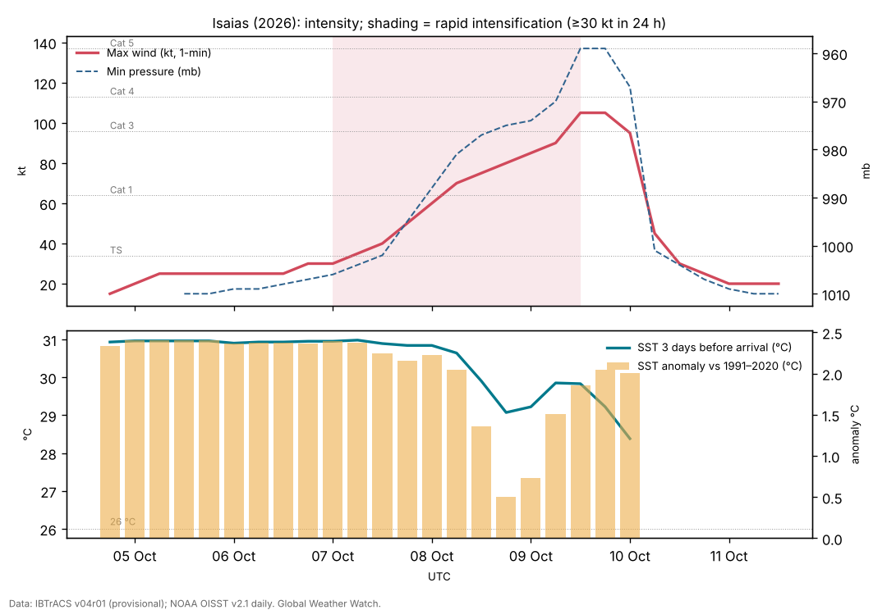

Hurricane Isaias (October 2026): the late first hurricane of a suppressed Atlantic season
Abstract
Isaias was the first hurricane of the suppressed 2026 Atlantic season, the latest first hurricane in more than a century, and still the season's only hurricane in late October. It formed as a depression in the southwestern Gulf on 6 October, drifted east, then accelerated northeast over water +2.0 °C warmer than the 1991–2020 normal (30.5 °C on average). Despite moderate shear it intensified by 35 kt in 24 hours, became a hurricane early on 8 October and a Category 3 hurricane of 105 kt (120 mph) on 9 October. Deep-layer shear of 30–40 kt then tilted and weakened it, and it made landfall near Destin, Florida, at 0130 UTC on 10 October (8:30 p.m. CDT on 9 October) as a Category 2 hurricane with 90 kt (105 mph) winds. It caused at least six deaths, power cuts to as many as 930,000 customers, storm surge of 5.6 ft above high tide at Panama City Beach and up to 13 inches of rain in Alabama; insured losses were estimated at about $2–4.5 billion. A rapid attribution study estimated that climate change made the Gulf waters it crossed about 1.4 °C warmer.
Main findings
- Exceptionally warm Gulf. Ahead of Isaias the sea averaged 30.5 °C and reached 31.0 °C, +2.0 °C against normal on average.
- Rapid intensification under moderate shear. Winds rose from 30 kt to 105 kt between 7 and 9 October, with the vortex tilted by westerly to southwesterly shear throughout NHC discussion 7, NHC discussion 10.
- Shear before landfall. On 9 October deep-layer shear rose to 30–40 kt; dropsondes showed winds dropping sharply near the surface, and Isaias came ashore at 90 kt rather than its 105 kt peak NHC discussion 13, NHC discussion 14.
- Impacts. Wind damage across the Florida Panhandle and southern Alabama; storm surge 5.59 ft above MHHW at Panama City Beach Pier; 12.97 inches of rain at Bellwood, Alabama; at least six deaths; tornadoes in Georgia and the Carolinas.
- El Niño season. Atlantic ACE was only 18% of normal for the date [8], as expected when El Niño raises shear over the Atlantic [5]; the Gulf was the exception.
1. Introduction
El Niño tends to suppress Atlantic hurricanes by increasing vertical wind shear over the tropical Atlantic and Caribbean [5]. In 2026, during a very strong El Niño [9], the season produced eight named storms before its first hurricane; by 22 October its accumulated cyclone energy was 19.5 × 10⁴ kt² against a normal of 110.4 [8]. Isaias, the ninth named storm, became the first hurricane only on 8 October, the latest date for a first Atlantic hurricane in 121 years [14]. This paper reconstructs how it intensified over the Gulf, why it weakened before landfall, and what it did on land.
2. Data and methods
Track and intensity. Six-hourly positions, 1-minute maximum sustained winds and minimum pressures from IBTrACS v04r01 [1], downloaded on 24 October 2026. For 2026 these are provisional values carried over from the operational advisories (National Hurricane Center); the official best track, issued in the post-season report, can differ. Rapid intensification (RI) is an increase of at least 30 kt in 24 hours [2]. Accumulated cyclone energy (ACE) sums the squared 6-hourly winds at tropical-storm strength or above.
Ocean. Sea-surface temperature (SST) and its anomaly against 1991–2020 from NOAA OISST v2.1 daily [3], sampled at each 6-hourly position three days before the storm arrived, so that the storm's own cooling is excluded; the change from three days before to three days after gives the cold wake. OISST is a 0.25° analysis and smooths very small wakes.
Atmosphere. Wind shear and mid-level humidity are taken from the forecasters' own analyses in the advisories and discussions (which use the SHIPS model and satellite estimates), quoted with date and time. In addition, the deep-layer (200–850 hPa) vertical wind shear was computed from ERA5 (Hersbach et al. 2020, in the references) as the difference of the winds averaged over a 200–800 km ring around each position, using daily means of 00 and 12 UTC on a 2.5° grid, with data to 18 October 2026. This coarse estimate captures the large-scale shear but not shallower or mid-level shear, which forecasters sometimes cite. The Madden–Julian oscillation (MJO) is described by the real-time RMM index [4] (phase and amplitude; amplitude ≥ 1 means an active MJO). ENSO values are NOAA CPC indices (RONI JAS 2026 +1.69 °C; weekly relative Niño 3.4 +2.4 °C in mid-October).
Impacts. Deaths, damage and observations are taken from official statements where available and otherwise from wire-service reports, each cited; figures are preliminary.
3. Life cycle

Genesis (4–7 October). IBTrACS follows a low that sat almost stationary near 22.0°N, 96.5°W, in the southwestern Gulf off Tamaulipas and Veracruz, from 4 Oct 1800 UTC. It became Tropical Depression Nine at 2100 UTC on 6 October and drifted slowly east within weak steering south of an upper trough over the southeastern United States NHC discussion 1, NHC discussion 2. Early on 7 October its circulation was still broad NHC discussion 3; that morning an Air Force aircraft found the centre re-forming farther north, closer to the mid-level centre, a structural change that forecasters expected could allow rapid intensification NHC discussion 4.
Intensification (7–9 October). By the afternoon of 7 October aircraft found 61 kt at 700 mb and 994 mb NHC discussion 5; that evening the pressure was 988 mb and the eyewall was open to the southwest, with outflow restricted by moderate shear NHC discussion 6. A dropsonde with a 76 kt boundary-layer wind made Isaias a hurricane at 0330 UTC on 8 October NHC discussion 7; tail Doppler radar on a NOAA P-3 showed a vortex tilted northward with height NHC discussion 7. Later on 8 October the first satellite-visible eye of the 2026 Atlantic season appeared NHC discussion 9, although microwave data still showed a tilted vortex under southwesterly shear NHC discussion 10. Overnight the eyewall contracted and the eye warmed; aircraft found 107 kt at flight level NHC discussion 11, and on the morning of 9 October 120 kt at 700 mb, making Isaias a major hurricane of 105 kt NHC discussion 12.
Weakening and landfall (9–10 October). As Isaias accelerated north, deep-layer southwesterly shear increased to 30–40 kt; radar showed the convection confined to the northern eyewall, and dropsondes showed a sharp drop-off of wind towards the surface, supporting 90–95 kt NHC discussion 13. Isaias made landfall near Destin at 0130 UTC on 10 October with 90 kt winds NHC discussion 14; NWS Tallahassee estimated 971 mb [12]. It weakened very rapidly over Alabama and became post-tropical by the morning of 10 October NHC discussion 15; its remnant brought heavy rain to the southern Appalachians, the Southeast and the Mid-Atlantic until 11 October NHC discussion 19.
| Quantity | Value |
|---|---|
| Source of winds and pressures | NHC operational values |
| First and last fix (UTC) | 4 Oct 1800 UTC – 11 Oct 1200 UTC |
| First fix position | 22.0°N, 96.5°W |
| Peak 1-minute wind | 105 kt (120 mph, 195 km/h), Category 3, 9 Oct 1200 UTC near 27.0°N, 87.6°W |
| Lowest pressure | 959 mb |
| Largest 24-hour increase | 35 kt (7 Oct 0600 UTC to 8 Oct 0600 UTC) |
| Time at tropical-storm / hurricane / major strength | 78 / 48 / 12 hours |
| Accumulated cyclone energy (ACE) | 7.4 × 10⁴ kt² |
| Track length and mean speed | 2,429 km at 15.0 km/h |
| Landfall | near Destin, Florida, 0130 UTC 10 Oct, 90 kt (NHC), about 971 mb (NWS Tallahassee estimate) |
IBTrACS v04r01, provisional (operational NHC values). IBTrACS shows 95 kt at 0000 UTC 10 Oct, the last fix before landfall.
4. Environment
Ocean. The water along Isaias's track was 30.5 °C on average three days before it arrived and up to 31.0 °C, with anomalies of +0.5 to +2.4 °C. Climate Central's rapid analysis found waters above 31 °C over the area of rapid intensification and estimated that climate change made them 1.4 °C warmer and 4 to 600 times more likely [15]. The cold wake was modest (up to 1.4 °C) because Isaias moved quickly over the central Gulf [7].
Shear. Isaias intensified under moderate westerly to southwesterly shear, with a vortex tilted with height and an eyewall repeatedly open on the southwest side NHC discussion 6, NHC discussion 7, NHC discussion 10; the warm water appears to have outweighed the shear until 9 October. The final increase in shear, to 30–40 kt, was forecast; the hurricane centre noted that a delay of about six hours in its onset could have brought a stronger landfall NHC discussion 11, NHC discussion 13.
ERA5 shear. Deep-layer shear around Isaias was 14–25 kt on 7–8 October, while it intensified rapidly, and 38 kt on 9 October, rising to 51 kt at landfall (Figure 1), consistent with the 30–40 kt cited by forecasters. Rapid intensification under 16–19 kt of shear is unusual and underlines how much the warm Gulf contributed.
MJO. The RMM index was in phase 1 (amplitude 1.0) at genesis and phase 2 (1.0) during intensification. Atlantic and Gulf activity varies strongly with MJO phase [6]; whether this phase helped Isaias is not tested here.
5. Impacts
Wind. Hurricane-force winds damaged roofs and buildings along the coast; preliminary observations include a gust of 117 mph at Oriole Beach [14] and 79 kt (91 mph) at Choctaw Beach, with 63 kt sustained at Panama City Beach [12]. As many as 930,000 customers lost power at the peak [14]; Santa Rosa, Holmes, Washington and Walton counties each had more than 80% of residents without power [13]. NASA's night-lights imagery showed much of the Pensacola area dark on 11 October [17].
Water. The highest gauge reading was 5.59 ft above mean higher high water at Panama City Beach Pier, with 3.58 ft at Apalachicola [12]; landfall came about two hours before high tide, which limited the surge [13]. Rain reached 12.97 inches at Bellwood, Alabama, and 12.47 inches at DeFuniak Springs, Florida, with 4–8 inches across much of the region [12].
Tornadoes and casualties. The remnant produced 23 tornado reports in Georgia and the Carolinas, with at least seven confirmed (EF0–EF1) [14]. At least four deaths were confirmed by 11 October: two in Escambia County, Florida (a falling tree; carbon-monoxide poisoning from a generator), and two in Alabama (Jefferson and Barbour counties) [13]; at least six were reported by 14 October [14]. No deaths were reported in the NWS Tallahassee area [12].
Losses. Moody's RMS estimated insured losses of $2.5–4.5 billion (best estimate $3.5 billion), mostly from wind; other modellers ranged from $1–2 billion (Verisk) to $3 billion (KCC) [16].
6. Climate context
Two climate signals pulled in opposite directions. El Niño's shear suppressed the Atlantic season as a whole [5], [8], but the Gulf of Mexico was exceptionally warm, and the one storm that formed there in early October found enough heat to intensify rapidly. Climate Central's analysis attributes about 1.4 °C of the Gulf warmth to climate change and estimates about 7 mph of additional wind, without a change of category [15]. This is a rapid, model-based estimate that has not been peer reviewed; it supports a contribution of climate change to the storm's energy supply, not a claim that climate change caused the hurricane.
7. Uncertainties
- Track, peak intensity and landfall values are provisional until NHC's Tropical Cyclone Report.
- Observed gusts and surge are preliminary; instruments may have failed or missed the peak.
- Death tolls differed between sources and over time; the six cited is a press tally.
- Insured-loss estimates are modelled and vary by a factor of about two.
8. Conclusion
Isaias shows that a suppressed season can still produce a damaging hurricane where the ocean is warm enough. Over a Gulf about 2 °C warmer than normal it intensified rapidly despite moderate shear, and only a well-timed increase in shear before landfall kept it to Category 2 at the coast. Its effects, from wind damage and outages to inland flooding and tornadoes, extended far beyond the landfall point.
Media evidence (links)
Videos, photographs, satellite images and news reports that document the storm. They are supporting evidence only: the analysis above does not rely on them, and the material belongs to its publishers, so it is linked rather than copied. Press videos and social-media clips are not independently verified.
| Type | What it shows | Source | Link |
|---|---|---|---|
| Videos | Roofs torn off and signs destroyed in Pensacola, Destin and Okaloosa County (10 Oct; videos not independently verified by Newsweek) | Newsweek | www.newsweek.com |
| Photos | Gallery of 29 photos (Getty Images): Destin, Milton, Fort Walton Beach, Pensacola, Pensacola Beach, 9–10 Oct | WEAR-TV | weartv.com |
| Satellite image | Night lights before and after: power outages around Pensacola (Black Marble) | NASA Earth Observatory | science.nasa.gov |
| Official report | Post-Tropical Cyclone Report: winds, surge, rainfall and damage (preliminary, 11 Oct) | NWS Tallahassee | www.weather.gov |
| Official graphics | Forecast cones, surge and wind graphics | NHC archive | www.nhc.noaa.gov |
| News | Hurricane history, tornadoes and outages | AccuWeather | www.accuweather.com |
Evidence table
| Factor | Observed conditions and timing | Proposed role | Evidence type | Confidence | Key sources |
|---|---|---|---|---|---|
| ERA5 deep-layer shear | 14–25 kt during RI; 51 kt at landfall | Moderate shear tolerated; strong shear weakened Isaias before landfall | Reanalysis (ERA5) | High | [10] |
| Very warm Gulf | SST 30.5 °C (+2.0) along the track; >31 °C over the RI area | Main energy source for rapid intensification | Observed (OISST); attribution study | High | [3] [15] |
| Centre re-formation | 7 Oct, closer to the mid-level centre | Allowed intensification to begin | Aircraft observation (NHC) | Medium | [11] |
| Moderate shear | Westerly to southwesterly, tilted vortex 7–8 Oct | Slowed but did not stop intensification | Aircraft radar, microwave (NHC) | High | [11] |
| Strong shear before landfall | 30–40 kt on 9 Oct | Weakened Isaias from 105 to 90 kt | Operational analysis; dropsondes | High | [11] |
| El Niño shear over the Atlantic | Atlantic ACE 18% of normal | Delayed the first hurricane; not decisive in the Gulf | Climatological reasoning | Medium | [5] [8] |
| Climate change | Gulf waters ~1.4 °C warmer (rapid estimate) | Added energy; ~7 mph more wind | Model-based rapid attribution | Medium | [15] |
References
- Knapp, K. R., M. C. Kruk, D. H. Levinson, H. J. Diamond and C. J. Neumann (2010). The International Best Track Archive for Climate Stewardship (IBTrACS). Bulletin of the American Meteorological Society 91, 363–376. Data: IBTrACS v04r01, NOAA NCEI (2026 positions provisional). doi:10.1175/2009BAMS2755.1 [bibliographic record; data read]
- Kaplan, J., and M. DeMaria (2003). Large-scale characteristics of rapidly intensifying tropical cyclones in the North Atlantic basin. Weather and Forecasting 18, 1093–1108. doi:10.1175/1520-0434(2003)018<1093:LCORIT>2.0.CO;2 [abstract read]
- Huang, B., et al. (2021). Improvements of the Daily Optimum Interpolation Sea Surface Temperature (DOISST) Version 2.1. Journal of Climate 34, 2923–2939. Data via NOAA PSL. doi:10.1175/JCLI-D-20-0166.1 [abstract read; data read]
- Wheeler, M. C., and H. H. Hendon (2004). An all-season real-time multivariate MJO index: development of an index for monitoring and prediction. Monthly Weather Review 132, 1917–1932. doi:10.1175/1520-0493(2004)132<1917:AARMMI>2.0.CO;2 [abstract read]
- Gray, W. M. (1984). Atlantic seasonal hurricane frequency. Part I: El Niño and 30 mb quasi-biennial oscillation influences. Monthly Weather Review 112, 1649–1668. doi:10.1175/1520-0493(1984)112<1649:ASHFPI>2.0.CO;2 [abstract read]
- Klotzbach, P. J. (2010). On the Madden–Julian oscillation–Atlantic hurricane relationship. Journal of Climate 23, 282–293. doi:10.1175/2009JCLI2978.1 [abstract read]
- Price, J. F. (1981). Upper ocean response to a hurricane. Journal of Physical Oceanography 11, 153–175. doi:10.1175/1520-0485(1981)011<0153:UORTAH>2.0.CO;2 [abstract read]
- Colorado State University, Department of Atmospheric Science: real-time tropical cyclone season statistics (ACE and storm counts to date by basin), read 22–23 October 2026; site copy data/ace_season.csv. https://tropical.atmos.colostate.edu/Realtime/ [data read]
- Global Weather Watch (2026). The 2026 El Niño against 1982–83, 1997–98 and 2015–16: a preliminary comparison (Paper 4). enso-2026.html [own analysis]
- Hersbach, H., et al. (2020). The ERA5 global reanalysis. Quarterly Journal of the Royal Meteorological Society 146, 1999–2049. 2026 data: Copernicus Climate Change Service Climate Data Store (u, v at 850 and 200 hPa, to 18 October 2026). doi:10.1002/qj.3803 [full text read (open access); data processed]
- National Hurricane Center: Hurricane Isaias (AL092026) advisory archive, forecast discussions 1–20, 6–11 October 2026 (US Government, public domain). Text copies in data/tc2026/nhc/ISAIAS/. https://www.nhc.noaa.gov/archive/2026/ISAIAS.shtml [read in full]
- NWS Tallahassee (2026). Post-Tropical Cyclone Report, Hurricane Isaias (preliminary, issued 11 October 2026). https://www.weather.gov/media/tae/TropicalEventSummary/PSHTAE_2026AL09_Isaias_Summary.pdf [read]
- NPR / WUNC (2026). At least 4 deaths attributed to Isaias after hurricane bashes Florida and Alabama. 10–11 October 2026. https://www.wunc.org/2026-10-10/at-least-4-deaths-attributed-to-isaias-after-hurricane-bashes-florida-and-alabama [read]
- AccuWeather (2026). Isaias made hurricane history before hitting Southeast. October 2026. https://www.accuweather.com/en/hurricane/isaias-made-hurricane-history-before-hitting-southeast-with-winds-upwards-of-110-mph-tornadoes/1945554 [read]
- Climate Central (2026). Climate change supercharged warm Gulf waters fueling Hurricane Isaias (Climate Shift Index alert, 9 October 2026). https://www.climatecentral.org/climate-shift-index-alert/climate-change-supercharged-warm-Gulf-waters-fueling-hurricane-Isaias [read]
- Artemis (2026). Moody's estimates insured losses from Hurricane Isaias in $2.5bn to $4.5bn range. 16 October 2026. https://www.artemis.bm/news/moodys-estimates-insured-losses-from-hurricane-isaias-in-2-5bn-to-4-5bn-range/ [read]
- NASA Earth Observatory (2026). Isaias dims the Gulf Coast (Black Marble night lights). https://science.nasa.gov/earth/earth-observatory/isaias-dims-the-gulf-coast/ [cited via site event log]